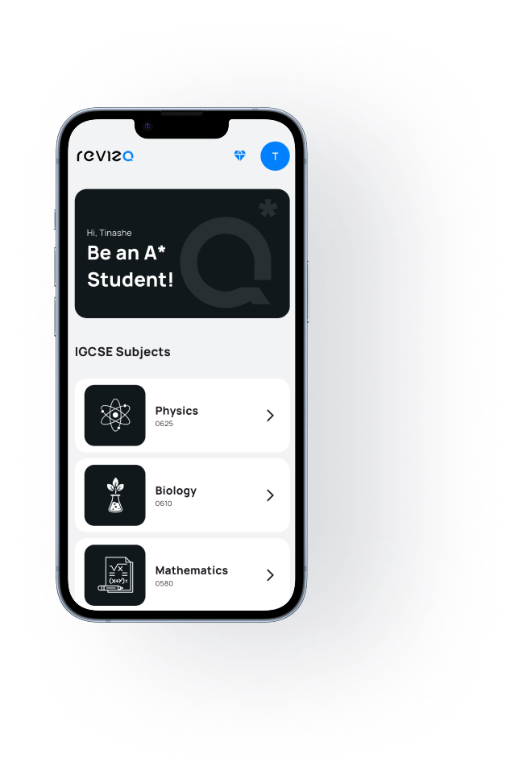

Your Cambridge
Revision Mate
Ace your O Level Science subjects with the ultimate revision companion. The Cambridge Revision App brings you all topical questions from past papers—organized, simplified, and ready for practice.
